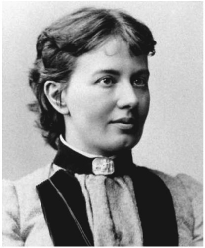
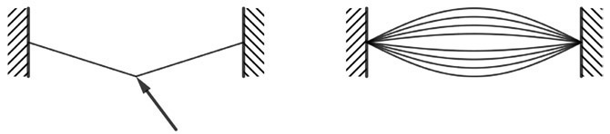

Sofia Kovalevskaya: Russian (1850–1891)
In every year since 1982, more women than men have earned bachelor’s degrees in the United States. In every year since 2009, women have also earned a majority of doctoral degrees. But women did not always have equal opportunities when it came to higher education. The preference to males over females in education has been a marked feature since ancient societies. It wasn’t until the mid to late nineteenth century that women’s access to universities became widespread in the United States, largely as a result of the pressure produced by movements for women’s rights. While men are now earning a minority of college degrees at all college levels, there is still male privilege to be found in academia; women are more likely to be found in lower-ranking academic positions. In 2015, women represented approximately half of assistant professors and associate professors in the United States but accounted for only a third of the full professors’ ranks. In mathematics, the gap is even bigger: In 2015, women held only 15 percent of tenure-track positions in mathematics. Sofia Kovalevskaya (1850–1891) was a pioneer for women in mathematics, at a time when mathematics was an almost exclusively male-dominated field around the world, and it was widely believed that women had a natural disability for this subject. Furthermore, it was believed that if a woman undertook rigorous “brain work” such as mathematics, energy could be diverted from her reproductive system, threatening fertility and general well-being. Kovalevskaya was the first woman to obtain a doctorate (in the modern sense) in mathematics and also the first woman appointed to a full professorship in modern Europe. Her name is still well-known among mathematicians for the Cauchy-Kovalevskaya theorem, a central result in the theory of differential equations.

Figure 38.1. Sofia Kovalevskaya.
Sofia Vasilyevna Kovalevskaya was born in Moscow on January 15, 1850, the second of three children. Both of her parents were well-educated members of the minor Russian nobility. Her father, Lieutenant General Vasily Vasilyevich Korvin-Krukovsky, served in the Imperial Russian Army as head of the Moscow Artillery. Her mother, Yelizaveta Fedorovna Schubert, descended from a family of German immigrants with a strong academic background. As it was common in her family’s class at that time, Sofia was nursed by nannies and saw her parents only at dinner. During childhood, she did not have much contact with her siblings either, mainly because of the age difference: Her sister, Anna, was six years older than she, and her brother, Fjodor, was five years younger. Sofia was educated by governesses and private tutors, including native speakers of English, French, and German. When Sofia was eight years old, her father retired from the army and the family moved to Palibino, her father’s family estate in the Vitebsk province. In the restoration of the estate, there was not enough wallpaper for Sofia’s nursery and so the walls were papered with pages found in the attic. These were in fact notes of the Ukrainian mathematician Ostrogradski’s (1801–1862) lectures on differential and integral analysis, left over from her father’s student days. Sofia was curious about the mathematical notions and formulas on the wall in her room and they came to life when she overheard her uncle, an autodidact who read a lot of mathematics books, mention some of the terms she had seen on the wall. Sofia later wrote the following in her autobiography:
“The meaning of these concepts I naturally could not yet grasp, but they acted on my imagination, instilling in me a reverence for mathematics as an exalted and mysterious science, which opens up to its initiates a new world of wonders, inaccessible to ordinary mortals.”
Her uncle fed her interest in mathematics and took the time to discuss the mathematical topics he was reading about with her. While Sofia was immediately fascinated with the concepts and ideas used in calculus, she was at first at little bored by her lessons in elementary geometry and algebra, which were provided by a private tutor. However, her attraction to mathematics in general began to grow as they moved on to more advanced material. In fact, it grew so strongly that her father decided to stop her mathematics lessons, but she continued to study mathematics on her own. At the age of fifteen, she read a physics book written by her neighbor Professor Tyrtov. When he visited the family, he realized that she had correctly interpreted some of the trigonometric formulas in the chapter on optics, without having been tutored in trigonometry. She had developed completely on her own some explanations of concepts such as the trigonometric sine function. Recognizing her mathematical talent, Tyrtov took quite some effort in trying to convince her father to let her study more advanced mathematics. He finally succeeded, and Sofia received private tutoring in calculus in St. Petersburg, where her family stayed most of the winter of 1866–1867. There she also met the Russian novelist Fyodor Dostoevsky (1821–1881), whom she admired. At that time, women in Russia, as well as in many other countries, were not allowed to attend lectures at the university, not even as guests. To continue her studies, Sofia would have to go abroad. However, traveling was also not an easy task, because women had no passports and needed the written permission of their father or husband to cross the border. Sofia entered into a marriage of convenience with Vladimir Kovalevsky, a young paleontology student, book publisher, and political radical, who was the first to translate and publish into Russian the works of Charles Darwin. The couple remained in St. Petersburg for only a few months and then went to Heidelberg, after a short stay in Vienna. Women could not matriculate at the University of Heidelberg, but Kovalevskaya persuaded the authorities to let her study there. In 1869, she was admitted as the university’s first female student, although not with an official status, and with the condition that she would have to obtain the permission from each of her lecturers separately. She studied mathematics with Leo Koenigsberger (1837–1921) and, at his suggestion, moved to Berlin to continue her studies with Karl Weierstrass (1815–1897), one of the most famous mathematicians at that time. In spite of letters of recommendation from her professors in Heidelberg, Weierstrass wanted to assess her mathematical abilities personally. He gave her a difficult problem to solve, and when she presented her solution one week later, he was so impressed that he would not only accept her as his student, but also try to support her work. However, his advocacy was not enough for the university administration to allow her to attend his lectures. Over the next three years, therefore, Weierstrass taught her the content of his lectures privately, which actually turned the university’s denial to her advantage; Kovalevskaya later wrote, “These studies had the deepest possible influence on my entire career in mathematics. They determined finally and irrevocably the direction I was to follow in my later scientific work: all my work has been done precisely in the spirit of Weierstrass.”
By 1874, Kovalevskaya had completed three papers—on partial differential equations, on the dynamics of Saturn’s rings, and on elliptic integrals—each of which was considered worthy of a doctorate by Weierstrass; with his support, she was granted her doctorate, summa cum laude, from Göttingen University. Kovalevskaya thereby became the first woman to have been awarded a doctorate at a European university. The first of the three papers was published in Crelle’s Journal (one of the leading mathematics journals) in 1875. It contains what is now commonly known as the Cauchy–Kovalevskaya theorem, which proves the existence of local solutions of analytic partial differential equations under suitably defined initial conditions. The French mathematician Augustin-Louis Cauchy (1789–1857) had proved a special case in 1842, but the full result is due to Sofia Kovalevskaya. Because the meaning of this theorem cannot be accurately explained without assuming familiarity with advanced calculus, we will instead try to convey at least a vague idea of what it says by discussing an example. To understand the significance of this theorem, it is important to know that partial differential equations can be used to describe a wide variety of physical phenomena, such as sound, heat, electromagnetic waves, the motion of fluids, elasticity, and even quantum mechanics, as well as the curvature of space-time, including gravitational waves. Each of these phenomena is governed by a fundamental law of physics that can be represented mathematically by a partial differential equation. For example, if you pluck a guitar string, the string will vibrate and produce sound. The motion of the string is governed by a partial differential equation whose unknown is the elongation of the string from its equilibrium position, as a function of position and time. Depending on where you pluck the string and how much force you apply, the sound produced will have different pitch and volume. Imagine a snapshot of the deformed string just before you let it go—it will have the shape of a V as shown in figure 38.2 on the left. The exact shape, determined by the position of the vertex along the string and its distance from the equilibrium position, represents our initial condition of the partial differential equation for the vibrating string. If you now let the string go, it will start to oscillate, thereby taking on a sinusoidal shape as shown in figure 38.2 on the right.

Figure 38.2.
This oscillatory motion is described by the solution of the partial differential equation. The Cauchy-Kovalevskaya theorem states that for suitable initial conditions, partial differential equations do have a solution and the solution is unique. In our example, this means that if we are able to solve the equation for the vibrating string for a given initial condition at time t = 0, we can predict exactly how the string will move—that is, how a snapshot of the string at any later time t > 0 will appear. But the Cauchy-Kovalevskaya theorem does not only apply to the vibrating string equation; it applies to a wide class of partial differential equations, in particular to many of those used in physics, and is therefore a very fundamental result. It does not tell us, though, how to obtain the solution, but tells us under which conditions a unique solution exists. This is important, because if we know that there is a unique solution, we can use it in an abstract sense to investigate its properties. In fact, for many partial differential equations it is not possible to calculate the solution explicitly, but one can find out a lot about its properties by assuming that it exists and then drawing conclusions from the equation it satisfies (for example, that the vibration of the string will decrease with time). This procedure of drawing conclusions about an object that we cannot calculate is justified by the Cauchy-Kovalevskaya theorem.
After her doctorate, Kovalevskaya went back to Russia, where she wanted to teach mathematics. However, women were not admitted to the required teacher certification examination, so the best job she was offered was teaching arithmetic in girls’ elementary schools. With a bit of frustration, she completely turned away from mathematics, and she and her husband tried to become a conventional married couple. In 1878, their daughter, Sofia (called “Fufa”), was born. After almost two years that were devoted to raising her daughter, Kovalevskaya decided to resume her work in mathematics. Her husband, Vladimir, never got an academic position because of his radical beliefs, and their attempts to support themselves with real estate development failed, leading them to severe financial problems. Since Sofia still couldn’t find an appropriate teaching position, she would now focus her energy on research. She started her endeavor by translating her six-year-old doctoral dissertation (which was written in German) into Russian and in 1880 presented the results at a scientific conference in Russia. In the same year, she moved with her husband and daughter to Moscow, where she visited seminars of the Moscow Mathematical Society. Her fascination for mathematics continued to grow ever stronger, whereupon, in 1881, she left her husband and went with her daughter to Berlin to continue with her research. She immersed herself in mathematical work and sent her daughter with a governess back to Russia, to her good friend Julija Lermontowa. In the meantime, Vladimir got involved with an oil company, which ruined him financially. He had always suffered severe mood swings, and in 1883, he committed suicide.
At that time, it was almost impossible for women to obtain a research position at a university. However, thanks to the Swedish mathematician Gösta Mittag-Leffler (1846–1927), who had known Kovalevskaya as a fellow student of Weierstrass, Kovalevskaya obtained a position as privat-do-cent at Stockholm University. In 1884, she was appointed to a five-year position as assistant professor and became an editor of Acta Mathematica, a mathematics journal established in 1882 by Gösta Mittag-Leffler, and now one of the most prestigious mathematics journals. In 1888, she won the Prix Bordin of the French Academy of Science for a work that contained the discovery of what is now known as the “Kovalevskaya top”: The differential equation describing the motion of a spinning top cannot be solved explicitly for a general top, but there are three special cases for which an explicit solution can be calculated; the first of these three exceptions was discovered by Leonhard Euler, the second by Joseph-Louis Lagrange, and the third by Kovalevskaya.
She received further honors for her academic achievements in the following years and in 1889, she became full professor at Stockholm University. Kovalevskaya was the first woman in modern Europe to hold such a position. In the same year, she fell in love with Maxim Kovalevsky, who was distantly related to her deceased husband. However, she refused to marry him, because she knew that she would not be able to settle down and live with him. Indeed, mathematics was her first love, and it would also be her last. After the couple returned from a vacation in Nice, Kovalevskaya caught pneumonia and in 1891, at age forty-one, died of influenza at the peak of her mathematical powers and reputation. Kovalevskaya is not only remembered for her significant contributions to mathematics; she was also a talented writer. Her non-mathematical publications include a memoir, A Russian Childhood (1890) and a partly autobiographical novel, Nihilist Girl (1890).